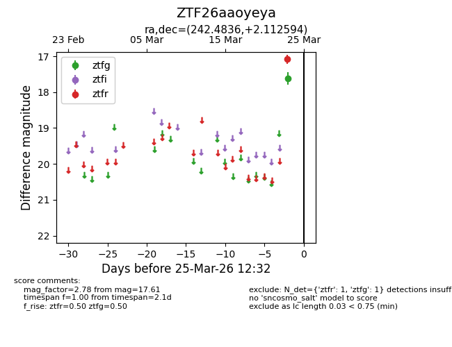
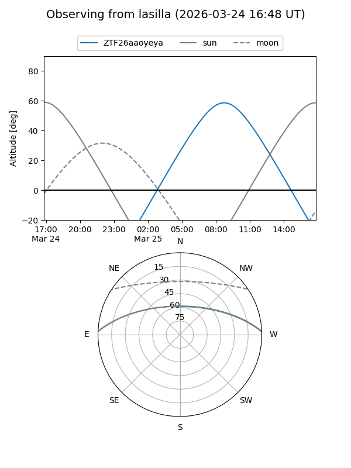
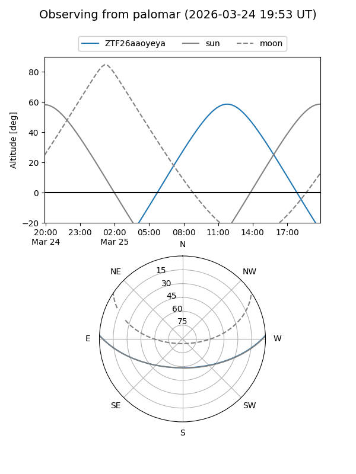

ZTF26aaoyeya
Target ZTF26aaoyeya at 2026-03-25 12:34
Aliases and brokers:
FINK: link
Lasair: link
ALeRCE: link
alt names
ZTF26aaoyeya (ztf,fink_ztf)
Coordinates:
equatorial (ra, dec) = 242.4836,+2.11259
equatorial (HMS+DMS) = 16:09:56.06,+02:06:45.34
galactic (l, b) = (13.9156,+36.36669)
Flags:
Photometry:
last ztfg=17.61, ztfr=17.08
1 ztfg, 1 ztfr detections
Lightcurve

Visibility


Additional plots